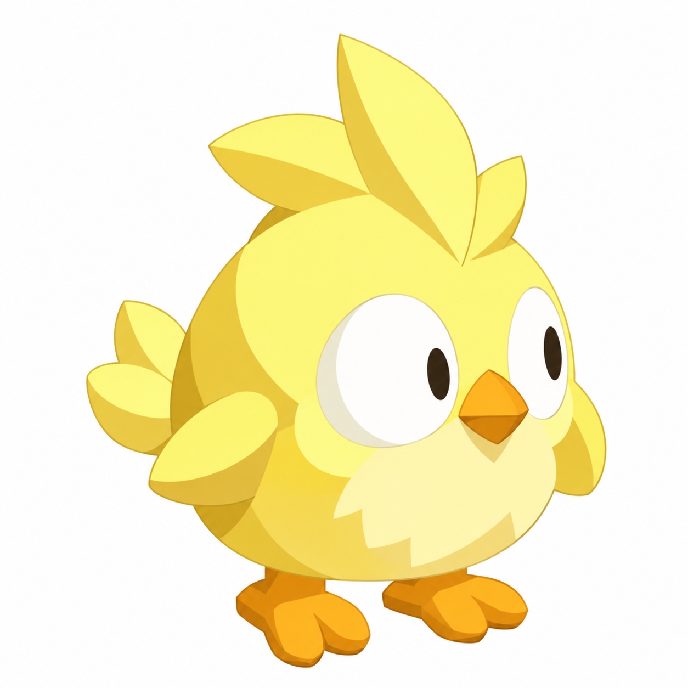
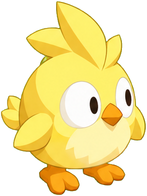
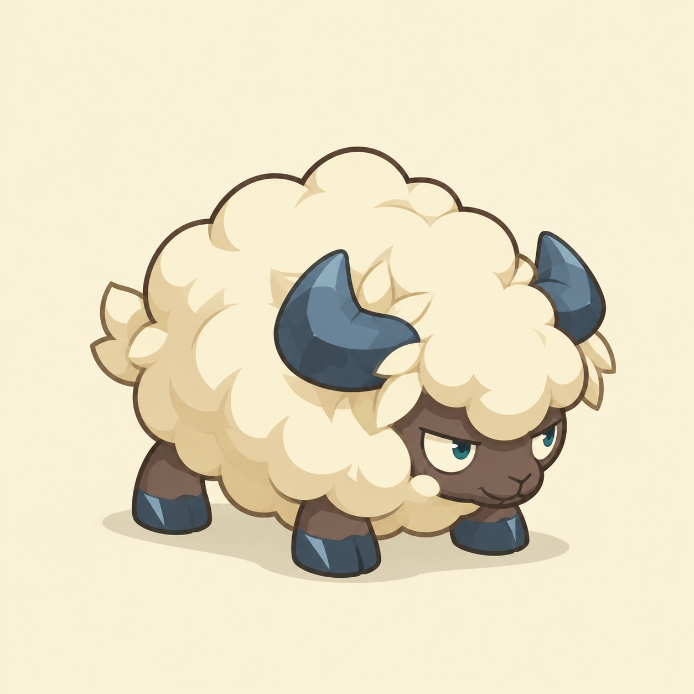
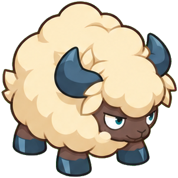

ÉTUDE DU BESTIAIRE · 16 OCTOBRE 2026
Les deux designs retenus.
Tes images deviennent les références de Bourlaine et de Plumet. Leurs huit orientations reprennent les grandes masses, les palettes et les expressions choisies.
01 / PLUMETS
Plumet
Jaune, rond, de grands yeux simples, un bec et des pattes orange.


02 / BOURLAINES
Bourlaine jeune
Laine crème, cornes et sabots bleu ardoise, silhouette trapue et regard obstiné.


Les huit orientations
Dos, dos droite, droite, face droite / face, face gauche, gauche, dos gauche.